|
Tales from Watership Down
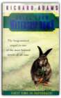
Richard Adams
Return Again to the Warren forthe All-New Adventures of Fiver, Hazel, BigWig, Dandelion, and The Legendary El-Ahrairah. In one of the most enduring classics of contemporary literature, author Richard Adams enthralled millions of readers by creating a glorious world of danger and discovery at once uniquely strange and strikingly similar to our own. Come back now to this remarkable society hidden beneath the tall grasses and open fields; to old friends and new heroes whose courage and tenacity are tested at every turn by predatory nature and the short-sighted cruelties of man. Come back to the excitement and enchantment, to the heartsoaring wonder of a place called Watership Down. Shogun
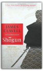
James Clavell
A bold English adventurer. An invincible Japanese warlord. A beautiful woman torn between two ways of life, two ways of love. All brought together in an extraordinary saga of a time and a place aflame with conflict, passion, ambition, lust, and the struggle for power...
Heart of Darkness and The Secret Sharer
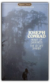
Joseph Conrad
ENDURING LITERATURE ILLUMINATEDBY PRACTICAL SCHOLARSHIP Two of Joseph Conrad's most compelling and haunting works, in which the deepest perceptions and desires of the human heart and mind are explored. EACH ENRICHED CLASSIC EDITION INCLUDES: • A concise introduction that gives readers important background information • A chronology of the author's life and work • A timeline of significant events that provides the book's historical context • An outline of key themes and plot points to help readers form their own interpretations • Detailed explanatory notes • Critical analysis, including contemporary and modern perspectives on the work • Discussion questions to promote lively classroom and book group interaction • A list of recommended related books and films to broaden the reader's experience Enriched Classics offer readers affordable editions of great works of literature enhanced by helpful notes and insightful commentary. The scholarship provided in Enriched Classics enables readers to appreciate, understand, and enjoy the world's finest books to their full potential. SERIES EDITED BY CYNTHIA BRANTLEY JOHNSON Blade Runner
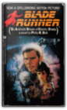
Philip K. Dick
World War Terminus had left the Earth devastated. Through its ruins, bounty hunter Rick Deckard stalked, in search of the renegade replicants who were his prey. When he wasn't 'retiring' them with his laser weapon, he dreamed of owning a live animal — the ultimate status symbol in a world all but bereft of animal life. Then Rick got his chance: the assignment to kill six Nexus-6 targets, for a huge reward. But in Deckard's world things were never that simple, and his assignment quickly turned into a nightmare kaleidoscope of subterfuge and deceit — and the threat of death for the hunter rather than the hunted ...
The Bookman's Wake
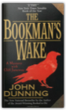
John Dunning
Denver cop-turned-bookdealer Cliff Janeway is lured by an enterprising fellow ex-policeman into going to Seattle to bring back a fugitive wanted for assault, burglary, and the possible theft of a priceless edition of Edgar Allan Poe's "The Raven." The bail jumper turns out to be a vulnerable young woman calling herself Eleanor Rigby, who is also a gifted book finder.Janeway is intrigued by the woman — and by the deadly history surrounding the rare volume. Hunted by people willing to kill for the antique tome, a terrified Eleanor escapes and disappears. To find her — and save her — Janeway must unravel the secrets of the book's past and its mysterious maker, for only then can he stop the hand of death from turning another page.... Wittgenstein's Poker: The Story of a Ten-Minute Argument Between Two Great Philosophers
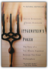
David Edmonds, John Eidinow
On October 25, 1946, in a crowded room in Cambridge, England, the great twentieth-century philosophers Ludwig Wittgenstein and Karl Popper came face to face for the first and only time. The meeting — which lasted ten minutes — did not go well. Their loud and aggressive confrontation became the stuff of instant legend, but precisely what happened during that brief confrontation remained for decades the subject of intense disagreement.An engaging mix of philosophy, history, biography, and literary detection, Wittgenstein's Poker explores, through the Popper/Wittgenstein confrontation, the history of philosophy in the twentieth century. It evokes the tumult of fin-de-siécle Vienna, Wittgentein's and Popper's birthplace; the tragedy of the Nazi takeover of Austria; and postwar Cambridge University, with its eccentric set of philosophy dons, including Bertrand Russell. At the center of the story stand the two giants of philosophy themselves — proud, irascible, larger than life — and spoiling for a fight. Machiavelli; the Prince
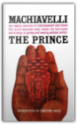
Christian. Gauss
The famous analysis of Statesmanship and Power.
The Edge Of The Crazies

As more of the town's prominent citizens start turning up dead, the pressure on Jules keeps rising. It starts to look like this rookie sheriff may not survive the next election...if he lives to see it. God Emperor of Dune
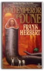
Frank Herbert
More than three thousand years have passed since the first events recorded in DUNE. Only one link survives with those tumultuous times: the grotesque figure of Leto Atreides, son of the prophet Paul Muad'Dib, and now the virtually immortal God Emperor of Dune. He alone understands the future, and he knows with a terrible certainty that the evolution of his race is at an end unless he can breed new qualities into his species. But to achieve his final victory, Leto Atreides must also bring about his own downfall ...
Heretics of Dune
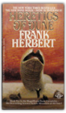
Frank Herbert
The planet Arrakis—now called Rakis—is becoming desert again. The Lost Ones are returning home from the far reaches of space. The great sandworms are dying. And the children of Dune's children awaken from empire as from a dream, wielding the new power of a heresy called love..This is Book 5 in Dune Chronicles. Children of Dune
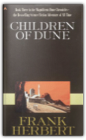
Frank Herbert
The desert planet of Arrakis has begun to grow green and lush. The life-giving spice is abundant. The nine-year-old royal twins, possesing their father's supernatural powers, are being groomed as Messiahs.But there are those who think the Imperium does not need messiahs... 24 Hours
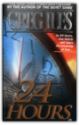
Greg Iles
Greg Iles's novels have been praised for their unusual depth of characterization and complexity of plot, and The Quiet Game was no exception. Reviewers called it "beautifully crafted" (The Providence Sunday Journal), "heartbreakingly honest" (Cleveland Plain Dealer), and simply "a grand thriller with a wonderful Southern seasoning" (The Orange County Register). In 24 Hours, Iles takes readers on a daringly executed roller-coaster ride with enough twists and surprises to last a lifetime.24 Hours begins with the perfect family. On the perfect night. About to become trapped in the perfect crime. Will Jennings is a successful young doctor in Jackson, Mississippi, with a thriving practice, a beautiful wife, and a five-year-old daughter he loves beyond measure. But Will and his family are being watched by a con man and psychopath who may be a genius. A man who has crafted the unbeatable crime. A man who has never been caught and whose victims have never talked to the police. A man whose life's work strikes at the heart of every family's unspoken fear: the unstoppable kidnapping. But this man has never met the likes of Will and Karen Jennings. The Dialogues of Plato
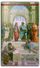
Plato, Erich Segal
Socrates’ ancient words are still true, and the ideas found in Plato’s Dialogues still form the foundation of a thinking person’s education. This superb collection contains excellent contemporary translations selected for their clarity and accessibility to today’s reader, as well as an incisive introduction by Erich Segal, which reveals Plato’s life and clarifies the philosophical issues examined in each dialogue. The first four dialogues recount the trial and execution of Socrates–the extraordinary tragedy that changed Plato’s life and forever altered the course of Western thought. Other dialogues create a rich tableau of intellectual life in Athens in the fourth century b.c., and examine such timeless–and timely–issues as the nature of virtue and love, knowledge and truth, society and the individual. Resounding with the humor and astounding brilliance of Socrates, the immortal iconoclast, these great works remain powerful, probing, and essential.
Julius Caesar
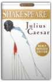
William Shakespeare
"Et tu Brute?" One of Shakespeare's best works, revised and repackaged, featuring a new Overview by Sylvan Barnet, former Chairman of the English Department at Tufts University. Includes an updated bibliography, suggested references, stage and film history, and an overview of Shakespeare's life.
Antony and Cleopatra
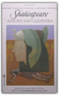
William Shakespeare, David Bevington, David Scott Kastan, James Hammersmith, Robert Kean Turner
A magnificent drama of love and war, this riveting tragedy presents one of Shakespeare's greatest female characters—the seductive, cunning Egyptian queen Cleopatra. The Roman leader Mark Antony, a virtual prisoner of his passion for her, is a man torn between pleasure and virtue, between sensual indolence and duty . . . between an empire and love. Bold, rich, and splendid in its setting and emotions, Antony And Cleopatra ranks among Shakespeare's supreme achievements.
Socrates: A Very Short Introduction
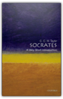
C. C. W. Taylor
In this book, Christopher Taylor explores the relationship between the historical Socrates and the engaging and infuriating figure who appears in Plato's dialogues, and examines the enduring image of Socrates as the ideal exemplar of the philosophic life—a thinker whose moral and intellectual integrity permeated every detail of his life, even in the face of betrayal and execution by his fellow Athenians.About the Series: Combining authority with wit, accessibility, and style, Very Short Introductions offer an introduction to some of life's most interesting topics. Written by experts for the newcomer, they demonstrate the finest contemporary thinking about the central problems and issues in hundreds of key topics, from philosophy to Freud, quantum theory to Islam. The Guns of August
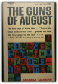
Barbara W. Tuchman
Dell paperback #3333, originally published in 1963. 95 cent cover price. Unlike the hardback edition, this paperback edition has no photos inside.
Mother Night
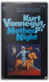
Kurt Vonnegut
Mother Night is a first-person narrative accounting the events in the life of Howard W. Campbell, Jr., who was a spy during WWII. Campbell is an American by birth, but made a name for himself as a writer in Germany. When World War II breaks out, Campbell chooses to stay behind in Germany and gets recruited by the Nazis to spread their propaganda, and he gets recruited by the United States to be a spy and send out messages through his propaganda. He is eventually put on trial in Israel for war crimes due to his participation during the war. This is the story of how a well-intentioned man recruited as an American spy becomes regarded as one of the most notorious Nazi propaganda machines.
The Autobiography of Malcolm X: As Told to Alex Haley
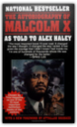
Malcolm X, Alex Haley, Attallah Shabazz
If there was any one man who articulated the anger, the struggle, and the beliefs of African Americans in the 1960s, that man was Malxolm X. His AUTOBIOGRAPHY is now an established classic of modern America, a book that expresses like none other the crucial truth about our times."Extraordinary. A brilliant, painful, important book." TEH NEW YORKTIMES |

My Library
Collection Total:
101 Items
101 Items
Last Updated:
Apr 7, 2013
Apr 7, 2013
 Made with Delicious Library
Made with Delicious Library